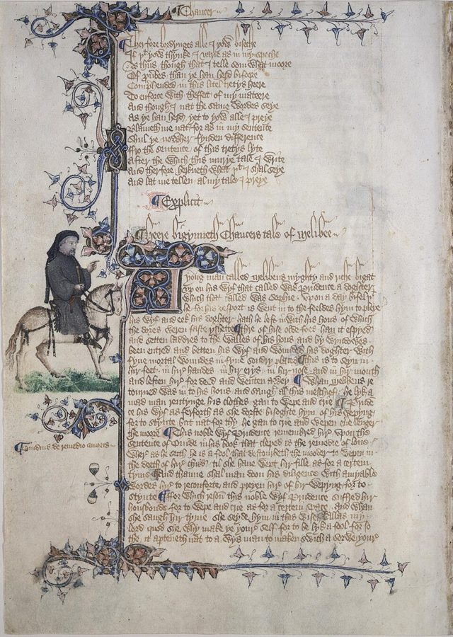
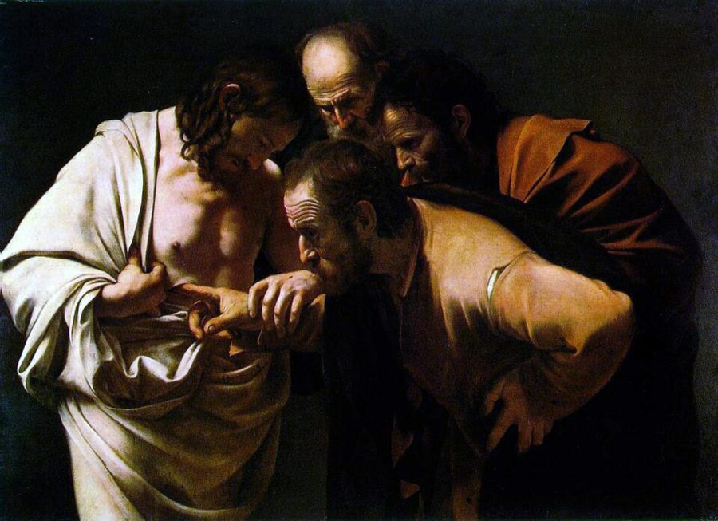
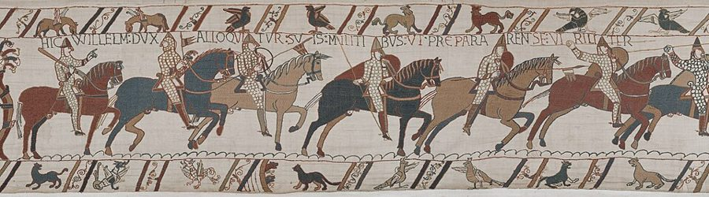
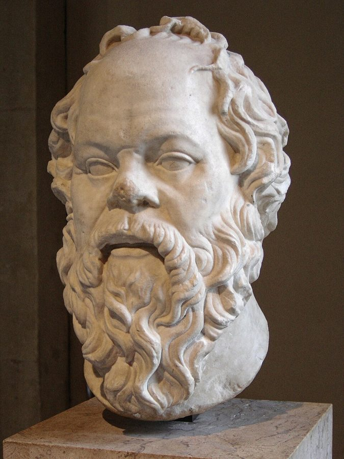

prima facie
… should, prima facie, apply to any …
初看起来，在没有反证之前
拉丁文，法律和哲学里常用。作者的限定：前十章的论证照理适用于一切演化出来的生物，除非有好理由把某个物种除外。他马上说，人就有这样的理由。
1976 年版的最后一章。前十章讲的都是基因，这一章转向人：人最特别的地方是文化，而文化也会演化。作者没有拿「对基因有好处」去解释文化，反而把基因降为一个类比，提出一种新的复制因子「觅母」：靠模仿从一个脑子传到另一个脑子的曲调、观点、习俗。读的时候抓两条线：作者对这个类比有几分把握，以及他反复追问的「对谁有利」。
上一页停在清洁鱼和互惠利他，第 10 章末尾刚把话头引到人类的心理。这一章是 1976 年初版的终章（第 12、13 章是 1989 年加的）。它不断回指前文：第 14 段搬来第 2 章复制因子的三条特性，第 17 段照第 3 章的办法给「单位」下定义，第 22 段借第 3、5 章的基因复合体，第 32 段回到第 5 章的「鸽子集团」。读之前把这几处有个印象，读起来就不觉得跳。
如果演化的根本是「会复制的东西」，人类文化里是不是也有这样的东西？它的演化还听不听基因的？
读的时候带着这几个问题。不用先找答案，读完回来对照「检查一下理解」。
这一章的推法和前几章不同：没有模型和算账，是一个类比一步步往前推。§1 先从人和鸟的例子立题：文化也会变，而且变得快。§2 突然升到很高的地方，问一切生命共有的原则是什么，答案是复制因子，再落回地面，给人类文化里的复制因子起名，拿上帝的观念当第一个例子，并回应同事的质疑。§3 把第 2 章的三条特性逐一套上去，在第三条上停下来承认没把握。§4 往类比里加竞争和结盟，例子是宗教，读到这里语气明显变尖。§5 先说觅母乐观的一面，再落到全章最认真的一句「对谁有利」，最后回到第 5 章的鸽子集团，收在人能反抗上。
作者落在哪：复制因子不止 DNA 一种；人类文化里的觅母一旦出现，就有了自己的演化，不必为基因服务，一个文化特性传得开，可能只是对它自己有利。人有预见力，能够反抗这些盲目的复制因子。
这一页是原书第 11 章的第 1–5 节。原书各章没有小标题，粗体的节名是本站起的，下面是这一节第一段开头的几个词，在电子书里搜它就能跳过去。读完打个勾。
先把这一页用到、作者默认你懂的几个概念讲一遍。讲的是概念本身，作者拿它推出什么，读原书时自己看。前几章讲过的复制因子、长寿、生殖力、复制精确性、生存机器、基因库、进化稳定策略，点进去看。
不靠基因、靠学习和模仿一代代传下去的东西，也会变：传的时候偶尔走样，有的走样被别人学去、传开，久而久之积累成大的差别。它和基因的演化像在两处：都有复制，都有出错。不像在途径和速度：基因只能从父母传给子女，一代要二三十年；文化可以在同代人之间横着传，一句流行语几天就能传遍。语言是最好的例子：每一代人都能和上一代交谈，几百年下来两头却互相听不懂。程序员可以想想一种写法怎样在团队之间、在复制粘贴里传开，又怎样一路走样。「会演化」不等于「在进步」：作者第 4 段说科学在某种意义上越来越好，那是另一层判断。
在这一页：第 2–4 段。乔叟和鞍背鸦两个例子说的是同一件事：靠模仿传的东西也会「突变」、会演化，而且比基因快得多。
一句话的达尔文主义：只要有一种东西能复制自己，复制时偶尔出错，不同的拷贝留下来的机会又不一样，那么一代代下来，留下来的就越来越是「善于留下来」的那些。演化就这样发生，不管这东西是什么做的，DNA、计算机程序、别的星球上的什么分子都行。作者后来写文章，把这个想法叫作「普遍达尔文主义」（注 55）。它和第 2 章的复制因子连着读：那里讲第一个复制因子怎样在原始汤里出现，这里说复制因子不必是 DNA。程序员熟悉的例子是遗传算法：只要有「复制、变异、按适应度筛选」三步，程序里也会长出没人设计过的解。
在这一页：第 7 段。作者说他不知道，但如果非要押注，就押这一条对宇宙里一切生命都成立；后面整章都建在它上面。
作者在第 9 段造的词，指文化传递或模仿的单位：一段曲调、一个观点、一句流行语、一种做陶罐的方法。他从希腊词根来的 mimeme（被模仿的东西）截短，要它是单音节、听着像 gene。今天通行叫「模因」，网络上也作「迷因」，多指在网上被大量复制、改编的图片和段子，那是这个词后来的用法，比原意窄。和基因库对应，有「觅母库」：一群人脑子里全部觅母的总和，觅母在里面争着被人记住、被人传下去。下面这张图把作者的类比摊开，哪几格对得上，哪几格他自己说对不上。
在这一页：第 9 段造词，第 10 段举例并引出觅母库。第 10 段末尾「不只是比喻」那段话是同事 Humphrey 说的，作者引用。
对应第 3 章的基因复合体和第 5 章的进化上稳定的基因组：食肉动物的牙、爪、肠胃彼此配套，因为它们在同一个基因库里一起被选择，各自的成败取决于和别的基因配不配。换到觅母，就是一组互相撑腰、一起传的观念：单拿一个出来未必传得开，放在一起就互相加固，新来的观念也很难挤进去。日常的例子是一套技术栈：一个框架带着它的构建工具、代码规范和社区习惯一起传，想单换掉其中一样往往很难。作者举的例子是宗教：他提出也许可以把有组织的教会看成这样一个复合体，上帝的观念、地狱之火、信仰、独身是里面的成员。
在这一页：第 22 段提出，第 27 段正式命名，用的是「我猜想」。第 23–26 段是它的例子。
按在书里出现的顺序排，标题前是节号。只讲到读懂这一页需要的程度。

Geoffrey Chaucer（乔叟，约 1343–1400），英国 14 世纪的诗人，《坎特伯雷故事集》的作者，用的是中古英语，今天的英国人不借助注释很难读懂。作者在第 2 段算了一笔：从乔叟到今天大约二十代英国人，链条上相邻的两代都能像父子一样交谈，可链条两头的人却没法对话。语言就这样不靠基因地「演化」，而且比基因快得多。
第 3 段的研究是 P. F. Jenkins 1978 年发表在《动物行为》（Animal Behaviour）上的论文。他研究的是新西兰的北岛鞍背鸦，主要在 Cuvier 岛上，给鸟套上彩色脚环，一只只记录。岛上一共约九种歌，相邻地盘的雄鸟组成「方言群」，唱同一首。比较父子的歌，发现歌不是遗传的，是小雄鸟跟邻居学的；偶尔学错，新的唱法又被更年轻的鸟准确地学去，形成新的方言群。Jenkins 把这叫作「文化突变」。作者拿它说明：文化传递不是人独有的，但鸟和猴子的例子只是「有趣的个案」，真正显出文化演化威力的是人。
第 5 段说，文化和基因演化的类比早有人讲：科学哲学家 Popper 把科学的进步比作自然选择；遗传学家 Cavalli-Sforza、人类学家 F. T. Cloak、动物行为学家 J. M. Cullen 当时都在往这个方向走。Cavalli-Sforza 后来和 Feldman 合写了《文化传递与演化》（1981），是用数学模型研究文化传递的早期名著。第 6 段拿两部人类学著作说明人类文化差别之大：Colin Turnbull 1972 年的《山里人》写乌干达的伊克人，作者用「极端自私」概括；Margaret Mead 1935 年写新几内亚的阿拉佩什人，作者用「温和的利他」概括。
第 10 段末尾那段话出自作者的同事 N. K. Humphrey，是他读这一章初稿时的概括：觅母不只是比喻上、而是在严格意义上的活结构，你把一个觅母种进我的脑子，就真的寄生了我的大脑，「死后有灵」这样的觅母实实在在地化成了千百万人神经系统里的结构。作者引了它，但注 57 说，他自己一直不敢把话说得这么实，因为人们对大脑知道得远比基因少；直到 1989 年前后收到德国康斯坦茨大学脑科学家 Juan Delius 的论文，画出了觅母可能的神经结构，他才松了口气。
第 14 段说，一个科学观点传得多广，可以粗略地数它每年在期刊上被引用几次。注 59 真去数了：Hamilton 1964 年那两篇亲属选择的论文，起初多年无人问津，1970 年代起引用数大涨，画在对数图上近乎一条直线，像一场慢慢烧起来的传染。作者由此推测，这股兴趣不是 1975、1976 年的几本书（包括他这本和 E. O. Wilson 的《社会生物学》）单独点燃的：一场从 1967 年就开始的缓慢升温里，那几本书既是症状，也是推手之一。注里还有一个侦探故事：好几本书都把 Hamilton 论文的标题引错成同一个样子，Jon Seger 和 Paul Harvey 想拿这个错当「放射性标记」追查影响，追到 Wilson 的书；作者翻出自己 1970 年的旧讲义，发现自己更早就犯了同一个错。他猜两人都是被 Fisher 的名著书名带偏的。

典故出自《约翰福音》第 20 章：门徒托马斯听说耶稣复活，说除非亲手摸到伤口，否则不信。英语里 a doubting Thomas 就是「凡事要看证据的人」。作者在第 24 段拿这个故事说明他所说的「信仰」觅母怎样维持自己：在他的读法里，故事是让人赞许其他不需要证据的门徒。注 61 里他把话说得更直，称托马斯是十二门徒里唯一真正值得钦佩的。这是作者对这个故事的读法，本站只照书里转述。

第 28 段说，伊丽莎白二世（1976 年在位的英国女王）是 1066 年征服英格兰的威廉一世的直系后裔，但「很可能」身上没有一个来自这位老国王的基因：每过一代，一个祖先的贡献就减半，近千年下来所剩无几（今天的研究怎么说，见「对照今天」）。第 29 段接着说，苏格拉底今天也许还有一两个基因活着，也许没有，这是 G. C. Williams 说过的；紧跟着的反问「谁在乎呢」，原文没说是谁的话。苏格拉底、达·芬奇、哥白尼、马可尼的觅母复合体倒是至今活跃。

注 62 回应的是 1984 年的《不在我们的基因里》（Not in Our Genes），作者是神经科学家 Steven Rose、心理学家 Leon Kamin 和遗传学家 Richard Lewontin。注里引了他们一段话：照还原论，大脑是被生物学决定的对象；Wilson 和 Dawkins 为了躲开「犯罪也是基因决定的」这个难题，就搬出自由意志，让人能违背基因，这是回到笛卡尔式的二元论。作者的回答见下面的尾注一节。
按节排，每节前面是分节地图里的节名。标着「每个字都认识」的，是熟词生义、习语和反话，最容易读错。灰色的那几个字是原句里的位置，在电子书里搜它就能找到。
对着中译本（40 周年增订版）读的时候看这一节。下面是译本这几节和这一页尾注里会让人读错的地方：灰字是英文原文那一处的几个词，在英文电子书里搜它；方框里是译本的原句，在译本电子书里搜它。措辞别扭但意思没错的不收。全书的勘误汇总在译本勘误。
… although basically conservative, it can …
译本：「这种传播是有节制的」
conservative 在这里是「倾向于照原样保留」：文化传递和遗传一样，大体照原样传，偶尔走样，所以能演化。「有节制」让人摸不着头脑。
… a bird called the saddleback which …
译本：「一种叫黑背鸥的鸟」
saddleback 是新西兰特有的鞍背鸦（垂耳鸦科），林栖的鸣禽，背上有一道栗色「马鞍」，和海鸥无关。第 4 段的「黑背鸥」也是它。
… the change may be progressive.
译本：「这种变化可能是渐进的」
原文说文化的变化可以是有进步性的、越变越好，下一句才接得上「现代科学比古代科学好」。「渐进」说的是速度，和上下文对不上。
… is there anything that must be true …
译本：「有没有任何物质是共同一致的」
原文问：不管生命以什么化学为基础，有没有什么对一切生命都必然成立。答案是一条原则（复制实体的差别性生存），不是某种物质。译成「物质」，正好把作者要说的「与化学基础无关」弄反了。
… not just metaphorically but technically.
译本：「而是有学术含义的」
Humphrey 的意思是：觅母不只在比喻上，而且在严格、字面的意义上是活的结构，真的以神经结构的形式存在。这正是「觅母是比喻还是实物」之争的焦点，「有学术含义」把它说虚了。
… If the meme is a scientific idea, …
译本：「如果说觅母这个概念是一个科学概念」
原文是在举例：如果某个觅母是一条科学观点，它传得多广可以数期刊引用；后面接着说曲调、女鞋。不是在说「觅母」这个概念本身是不是科学。译本注 59 的标题照抄了这句，也要这样读。
… concerned with mimicry in butterflies became …
译本：「与蝴蝶模拟行为有关的一大组基因」
指第 3 章讲过的蝴蝶拟态：一种蝴蝶长得像另一种有毒的蝴蝶，管翅膀花纹的一组基因紧紧连锁在一起。说的是长相，不是行为。
… we could regard an organized church …
译本：「也许我们可以把一个有组织的教堂」
an organized church 是有组织的教会，一个机构。后面列的建筑、仪式、律法、音乐、艺术、文字传统，是这个教会的组成部分，所以「教堂连同它的建筑」读起来才别扭。
… Blind faith can justify anything.
译本：「盲目信仰的人什么事都干得出来」
原文说：盲信可以给任何事找到正当的理由，下面举的是它怎样「判定」异教徒该死。主语是信仰这个觅母，不是信仰的人。译本注 61 的标题也是这一句。
… how much time people spend in actively …
译本：「人们需要多少时间才能把这个觅母主动地传播」
原文的假设是：觅母的成败取决于人们花多少时间主动去传它，花得越多越好，所以做别的事都算浪费。译本读起来像「传一次要多少时间」，后面独身的推理就接不上了。
… it may live on, intact, long …
译本：「所有这些都能完整无损地流传下去」
原文是 may：你的好主意、曲子、诗，可能在你的基因散尽之后还完整地活着。译本成了「都能」，后面还加了原文没有的「永不湮灭」。
… as G. C. Williams has remarked, …
译本：「但正如威廉斯所说的，谁对此感兴趣呢」
原文的「如 Williams 所说」挂在前半句：苏格拉底今天也许还有一两个基因活着，也许没有。「谁在乎呢」紧跟在后，没说是谁的话。译本把这句反问算到了 Williams 头上。
… evolved in the way that it has, …
译本：「一种文化特性可能是按其特有的方式形成的」
原文：一个文化特性之所以演化成现在这样，可能只因为这样对它自己有利。得利的是这个文化特性本身。译本拆成「按特有的方式形成」「这种方式对其自身有利」，全章最要紧的一句「对谁有利」就模糊了。
… the more anxious to repeat that …
译本：「几乎不存在时更加不安」
anxious to 是「急于」。原文说：meme 这个词流行起来了，所以他更要赶紧重申，自己对人类文化的抱负小到几乎没有。不是说重申这一点让他不安。
… to cut the gene down to size, …
译本：「我的目的是把基因切得更小」
cut down to size 是习语：让自视过高的东西回到它应有的位置。作者说这一章的目的是证明基因不是唯一的复制因子，给基因降降格，而不是建一套文化理论。这是理解全章的关键一句，见下面「值得停下来的句子」里第 30 段那条的说明。
… if the reader closes the book …
译本：「如果读者选取这本书时觉得」
原文说：读者读完、合上这本书时，如果觉得 DNA 不是唯一可能的演化基础，第 11 章就成功了。是读完的感受，不是选书时的感受。
… a sociology as well as a logic …
译本：「尽管有社会科学以及科学逻辑」
原文：科学不光有逻辑，也有社会学，也就是人群里的流行和跟风；所以坏观点也能流行一阵，好观点也会埋没多年。译本的「社会科学」把意思弄丢了。
… that memic revival over the subsequent decade.
译本：「让我们来追踪其后几十年里这个觅母的复兴吧」
decade 是十年：从 1976 年写那段话，到 1989 年第二版。不是几十年。
… from 1967 to the late 1980s.
译本：「这个爆发从1967年开始到1980年结束」
原文说这场缓慢燃烧的兴趣爆发，从 1967 年一直延续到 1980 年代后期，也就是作者写注的时候，并没有「结束」。
… These are Williams’s 1966 book, …
译本：「威廉斯1996年出版的」
《适应与自然选择》是 1966 年出版的，晚于 1989 年的这条注不可能被画进图里。
… I have been downplaying the influence …
译本：「我低估了特定几本书」
原文是「我一直在淡化个别几本书的作用」，承接前面的论证（兴趣上升早于那几本书），接着用「尽管如此」引出引文错误的故事。译成「我低估了」，像是在认错。
… protective of a favourite demonological icon …
译本：「最心爱的神学偶像」
demonological 是「魔鬼学的」。作者讽刺批评者需要一个可以拿来声讨的「魔鬼」，也就是下一句的「还原论」。译成「神学偶像」，这层讽刺就看不出来了。
… that Rose and his colleagues are …
译本：「我认为罗斯和她的同事是在谴责我们」
原文是 his colleagues。Steven Rose 是英国神经科学家，男性。同一段后面的「罗斯和她的同事」也是一样。
… Wilson and Dawkins invoke a free will …
译本：「威尔逊和道金斯许下了一个自由的愿望」
这是作者引的批评者原话：说 Wilson 和 Dawkins 搬出「自由意志」，好让人能违背基因。整条注争的就是自由意志和基因决定论，译成「愿望」就看不出在争什么。
We, alone on earth, can rebel against the tyranny of the selfish replicators.— §5 第 33 段。本站译：在地球上，只有我们能起来反抗自私的复制因子的专制。
1976 年版全书的最后一句。口气是号召式的，但动词是 can（能），不是 may（也许）或 will（将会）：作者说人有这个能力，没说人一定会用。同一段前面也是这个分寸：预见力 could save us（能够让我们免于最坏的自私），we have the power to defy（我们有力量违抗）。常被误读的有两处：一是以为前十章说「基因决定一切」，到这里自相矛盾，作者在注 62 回答了；二是以为他在说人天生无私，其实他刚刚假设了最坏的情形，人基本上是自私的。
… a cultural trait may have evolved in the way that it has, simply because it is advantageous to itself.— §5 第 30 段。本站译：一个文化特性之所以演化成现在这个样子，可能只是因为这样对它自己有利。
作者说这是全章「认真的一点」，前面关于觅母的发挥都可以当推测，这一句他要读者记住。口气是认真下判断，但限定词是 may：可能只对它自己有利，不是一定。关键词是 itself：生物学家习惯问一样东西对基因、个体、群体或物种有什么好处，作者说还有一个没人考虑过的答案，对这个文化特性本身有好处。常见的误读是把它读成「文化都是有害的寄生虫」，原文没这么说，第 31 段还承认宗教、音乐这些也可能有通常的生物学好处。和注 56 合读：给基因降格，就是不让「对基因有利」独占解释。
正文里的星号是 1989 年第二版加的，点了跳到书后的尾注。下面是这一页的每个星号：注里说了什么，值不值得现在就点开。英文是星号前紧挨着的几个词，在电子书里搜它就能找到那个星号。
… by the differential survival of replicating entities.*
作者说，第 7 段的押注后来在他的论文《普遍达尔文主义》和《盲眼钟表匠》最后一章里正式论证了：所有提出过的达尔文主义替代方案，原则上都解释不了生命的有组织的复杂性。有批评者嫌这个论证「太哲学」，他回击说没有人找出其中的错，而且原则性的论证如果没错，能告诉我们宇宙中一切生命的事。可以跳过。
… if I abbreviate mimeme to meme.*
meme 这个词流行起来了，1988 年已列入牛津词典的候选词。作者因此更要重申：他对人类文化的抱负小到几乎没有；真正的抱负在别处，是证明一切会复制、会出点小错的实体，只要出现，往往就会成为达尔文式演化的基础。文化是否真有这样的条件，他说自己没把握，也不是重点。一定要点开，读全章前读最好。
… not just metaphorically but technically.*
作者说，如果觅母真像基因，它就得是脑子里能自我复制的神经连接模式；他一直不敢明说，因为对大脑知道得太少。所以他很高兴看到脑科学家 Delius 大胆画出了觅母可能的神经结构，并把觅母比作从恶性寄生到良性共生的一系列寄生物。Delius 还强调要把觅母和它的「表型」效果分开。可以跳过。
… only for the rest of my life.*
正文顺手举的《友谊天长地久》，原来是个绝妙的例子：今天几乎人人把副歌唱成 for the sake of auld lang syne，Burns 的原词没有 the sake of。作者的解释：s 和 k 两个辅音特别刺耳，满屋子人唱原词，一个人唱错版，不会词的孩子听到的偏偏是错版。《统治吧，不列颠尼亚》的 rules 也是这样。值得点开，是全章最好玩的一条。
… in successive years in scientific journals.*
作者先申明：科学观点有对错，可以检验，不只是看谁传得快。然后真去数了 Hamilton 1964 年论文的引用数，认为近似一条长达二十年的指数曲线（他说「如果接受我的指数解释」），个别书和论文既是这股长期趋势的症状，也是它的推手，而不是唯一的起因；最后讲他和 Wilson 各自独立犯了同一个引文错误。很长，有三张图，喜欢数据的值得读。
… in which memes live are human brains.*
1976 年作者以为坏的电脑觅母只能靠复制出错偶然产生；到 1989 年，人为放出的病毒和蠕虫已是常事，他自己的硬盘一年里中过两次。他痛骂写病毒的人「又坏又小」，预言会出现收费的「软件医生」行业，像律师一样，去收拾那些本来就不该有的、人为造出来的麻烦。程序员读者值得点开，见「对照今天」。
… Blind faith can justify anything.*
作者说收到不少抗议他批评信仰的来信。他把信仰定义为不需要证据的相信，说正因为这样，没法在不同的信条之间分出高下；又引 Keith Henson 造的 memeoids 一词，指被一个觅母占据到连自己的生死都不顾的人。语气比正文更重。这是作者的立场，本站不评论；不急着读的可以跳过。
… the tyranny of the selfish replicators.*
有人嫌结尾的乐观和全书不一致。作者回答 Rose 等人：基因对行为只有统计性的影响，这种影响可以被别的影响修正、压过甚至逆转；性欲是自然选择造的，人却能在需要时克制它，这里没有什么二元论。每次避孕，就是对基因的一次小小反抗，没有理由不能大规模地反抗。一定要点开。
读完这一页的几节再看。下面是作者在这几节里的论点，由本站按论点重新组织，不按原书的顺序；每条下面是依据所在的段落，拿不准就回书里那几段再读一遍。
作者先说自己不知道，再押注：一切生命都靠会复制的实体的差别性生存而演化。用基因的利益解释生物之所以对，是因为基因是复制因子；新的复制因子一旦出现，就会开始自己的演化。1989 年注 56 说明本意：是给基因降格，证明复制因子不止一种，不是要建文化理论。
§2 第 7、13 段，注 55、注 56人的特别在于文化，文化传递能产生比基因快得多的演化；用「对基因有利」去解释文化，他认为解释不了文化的巨大差异。于是基因在这里只当类比。上帝的观念生存价值高，指的是它在觅母库里传得好，不是指它对基因有好处。1989 年注 56 补了一句：人类文化是否真具备让达尔文式演化运转的条件，他没有把握，这也不是他关心的重点。
§1 第 2、6 段，§2 第 9–13 段生殖力比单个拷贝的长寿要紧；保真度看上去很低，传一次变一次。他承认这里站不稳，又提出这可能是假象，就像肤色由许多微小的基因叠加而显得「混合」；「一个觅母」按方便来定，凡是总被人一起接受的就算一个。
§3 第 14–18 段「自私的觅母」和「自私的基因」一样只是比喻。他猜想宗教是这样一个复合体：地狱之火和信仰让上帝的观念更好传，独身的觅母可以兴旺，尽管独身的基因注定失败。他特意说，不必假定教士有意设计。他强调全章最认真的一点：问文化特性的生存价值，先问是谁的生存。
§4 第 19–27 段，§5 第 30–31 段复制因子没有预见，所以像鸽子集团那样对大家都好的安排维持不住。即使假定人基本上自私，预见力也可以让我们免于最坏的自私，人能违抗与生俱来的基因和灌输来的觅母。人是否有真正无私的利他，他只说希望有，不论证。注 62 和 2006 年导言第 33 段都拿避孕作例子：基因只有统计性影响，人可以违背它。
§5 第 32–33 段，注 62合起来：这一章把全书的主角从「基因」换成了「复制因子」：基因重要，是因为它会复制，而不是因为它是 DNA。这样一来，人的文化可以有自己的演化，人也可以违背基因。前十章说的基因的「自私」，到这里被明确限定为复制因子的性质，不是人的命运，这也回应了第 1 章那句后来被作者收回的「生来自私」。
这本书 1976 年出版。下面挑出这一页里能被后来的研究检验的说法，分「书里 / 当时 / 今天」三栏，并给一个结论。结论判的是标题里「书里的说法：」后面那一句。全书的这一节汇总在对照今天。
读完作者的论点，再看它站不站得住。每一块摆出三样：主流怎么看，作者怎么看，本站的评论。最后一句是本站对这一页的总体判断。
主流看法：研究文化演化的学者多数接受「文化会按达尔文式的方式演化」，但不接受觅母是它的基本单位：Atran（2001）、Sperber（1996）认为人传观念时多在重构而不是复制；Henrich、Boyd 和 Richerson（2008）认为没有复制子也行。支持觅母学的有 Blackmore（1999）。
作者的看法：他在第 15 段承认保真度站不稳，第 30 段说觅母理论是推测，注 56 说他对文化的抱负小到几乎没有；觅母是实在的脑结构，这话是 Humphrey 先说的（第 10 段）；注 57 里作者说自己也这么看，只是一直不敢明说，真把可能的神经结构画出来的是 Delius。
本站的评论：作者对觅母的把握，比后来很多用这个词的人都小。作为一门学问，觅母学没有立住，原因正是他自己点出的两处：单位说不清，复制不精确。但这一章真正的赌注，「复制因子不止 DNA」和「问清对谁有利」，比觅母学经得住，文化演化研究至今在用这种提问方式。所以这一章最好当一个思想实验来读，而不是一套文化理论。
主流看法：用演化讲宗教的研究大致有两路：一路（如 Boyer 2001）把宗教观念看作人类认知倾向的副产品，因为好记、好传而广布；一路（如 D. S. Wilson 2002、Norenzayan 2013）看重宗教在促进群体合作上的作用。两路都很少采用「自我复制的觅母复合体」这一框架。
作者的看法：说上帝观念的生存价值高，指的是在觅母库里，不是对基因（第 31 段又说，宗教也可能同时有通常的生物学好处）；地狱之火、信仰、独身互相扶持；他不认为有谁刻意设计（第 11–13、22–26 段）。注 61 把对信仰的批评说得更重。
本站的评论：这里只谈这个类比，不评判任何信仰。类比有用在提问方式：一个观念传得开，不必对信它的人有好处，也不必有人设计，独身的例子尤其清楚地把「对觅母好」和「对基因好」分开了。弱处是：作者给的理由（心理上吸引人、给不公一个说法、地狱之火让人恐惧）都落在心理学上；大脑为什么容易被这些打动，正是第 12 段同事追问的，他的回应是同事一样在预设，并没有给出另一种解释。另外，这几段的语气是全书最尖锐的，读的时候把论证和作者的态度分开看。
主流看法：书里被回应的批评者 Rose、Kamin 和 Lewontin（1984）认为这是在需要时搬出自由意志的二元论。今天行为遗传学的常见说法则是：人的几乎所有行为特质都有遗传成分，但差异里还有很大一部分既不来自基因也不来自家庭（Turkheimer 2000），遗传影响并不等于决定。
作者的看法：基因只有统计性影响，可以被别的影响修正、压过、逆转；避孕就是反抗（第 33 段、注 62、2006 年导言第 33 段）。人是否有真正无私的利他，他只说希望。
本站的评论：不矛盾。前十章讲的是基因怎样被选择、对身体和行为有什么统计倾向，并没有说每个人的每个决定都被基因写死，避孕这个例子足以说明。值得追问的是另外两处：预见力本身从哪来，作者说可能是觅母演化来的，也可能不是，留了空白；「纯粹无私的利他在自然界从未有过」是个很强的断言，他自己也没论证。所以这个结尾是一个有理由的希望，不是一个证明。
本站的总体看法：这一章最值得带走的是两个提问习惯：演化看的是复制因子，不只是 DNA；讲某样东西的「生存价值」，先问是谁的生存。觅母作为一门学问要打折扣，作者自己也没把它当真；宗教那几段是他的论证加他的立场，分开读。
先在心里答，再点开。答错的那题，回书里把对应那一节再读一遍。
乔叟说明语言不靠基因也能演化，而且快：相隔约二十代，两头的人已经无法交谈。鞍背鸦说明文化传递不是人独有的：鸟的歌靠模仿学来，学错了就是「文化突变」，新唱法还能传下去。
指的是这个觅母能不能在觅母库里传下去，不是指对基因的好处。同事认为说它「心理上吸引人」只是把问题推后一步，还要问大脑为什么被造成这样。作者回答：用基因解释一切，理由是基因是复制因子，新的复制因子出现后，这个理由不再独占。
复制精确性：观点每传一次都会被改动，看上去不像基因那样全有或全无。他辩护说，这可能是假象，就像肤色由许多微小基因叠加而看似混合；并把「一个觅母」定义为人们总是一起接受的那部分，差异不算在觅母里。
基因靠后代传，独身就断了；觅母靠人传给人。假设一个觅母的成败取决于人们花多少时间去传它，而婚姻占去教士的时间和精力，那么让教士独身对这个觅母有利。这是作者「为了讨论」设的假设。
讲文化特性的生存价值时，要先问是谁的生存。一个文化特性可能只因为对它自己有利才演化成这样，不必对个体、群体或基因有利。
作者说不是：基因对行为只有统计性的影响，可以被别的影响修正或推翻。性欲由自然选择造成，人却能克制它；每次避孕都是对基因的一次小小反抗。
作者的解释：s 和 k 两个辅音特别突出。满屋人唱原词，一个人唱错版，不会词的孩子偏偏听清的是错版，下一轮就跟着唱。不是人们更喜欢错版，而是错版本身更容易被听到、被学去。
用一句话说这一页，写给一个没读过的人。
想一想：你的团队或你常去的技术社区里，有没有一种写法、一个说法、一套流程，传得很广，却说不清它对谁有好处？它靠什么传开：好用、好记、好复制，还是只是大家都这么做？
读过又忘了，从这里想起来。挑的是这一页最值得记住的模型、动物和说法，不按原书顺序；每条后面是节号，想细看就回书里那一节。全书各页的这一节都收在全书回顾。
一句话：复制因子不止 DNA 一种；人类文化里的觅母有自己的演化，未必对人或基因有好处，而人有预见力，能够反抗盲目的复制因子。
作者从希腊词根 mimeme 截成单音节的 meme，要它听着像 gene：靠模仿从一个脑传到另一个脑的曲调、观点、流行语。注 56 说，本意是给基因降格。
§2新西兰的鞍背鸦跟邻居学歌，偶尔学错，错的唱法又被小鸟学去，形成新的方言群。Jenkins 管这叫「文化突变」。
§1独身的基因注定失败，独身的觅母却可能兴旺：如果婚姻会占去教士传教的时间。对觅母好和对基因好，可以是两回事。
§4你的基因每代减半，几代就淡了；一个好主意、一首曲子却可能完整地活下去。苏格拉底也许已无基因传世，他的觅母复合体至今活跃。
§5for the sake of auld lang syne 是唱错的，靠 s、k 两个刺耳的辅音传开（注 58）。错版胜出，不是因为人们更喜欢它，而是它更容易被听到。
§3全书初版的最后一句：在地球上只有人能反抗自私的复制因子。用的是 can，不是 may；注 62 举的例子是避孕。
§5